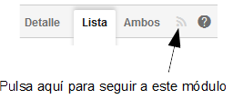

Notificación de cambios por correo electrónico (nuevo en v5.9)
A partir de v5.9 el usuario puede seguir cualquier módulo simplemente pulsando en un icono en la esquina superior derecha:

Después de pulsarlo cualquier cambio que otros usuarios hagan en los datos de este módulo se le notificará vía correo electrónico. El usuario puede pulsar en cualquier momento en el mismo icono para anular la suscripción. Para que esto funcione el usuario necesita tener una cuenta de correo electrónico válida definida en su cuenta de usuario (XavaPro o Liferay) o bien usar un correo electrónico válido como nombre de usuario (algo disponible incluso en el OpenXava simple y llano mediante
naviox-users.properties). Suscribirse a un módulo no está disponible para los módulos con
@Tab en
baseCondition por razones de seguridad.
Además, cuando un usuario crea un nuevo registro, todos los cambios a ese registro concreto por otros usuario le serán notificados por correo electrónico.
En cada mensaje el usuario tiene vínculos para quitar la suscripción.
Los cambios notificados son: creación de nuevos registros, modificación, borrado, añadir comentarios a una discusión, añadir/quitar imágenes de la galería, añadir/quitar archivos adjuntos y modificar colecciones.
En el caso de la modificación el mensaje de correo informa sobre las propiedades que se han cambiado con su valor antiguo y nuevo.
Configuración
Esta característica está desactivada por defecto. Para activarla has de seguir los siguientes pasos.
Añadir la entidad de suscripción al persistence.xml
En el
persistence.xml de tu proyecto añade la entidad
org.openxava.util.impl.EmailSubscription:
<persistence-unit name="default">
<provider> ... </provider>
<non-jta-data-source> ... </non-jta-data-source>
<class> ... </class>
<class>org.openxava.util.impl.EmailSubscription</class>
<properties>
...
</properties>
</persistence-unit>
<persistence-unit name="junit">
<provider> ... </provider>
<non-jta-data-source> ... </non-jta-data-source>
<class> ... </class>
<class>org.openxava.util.impl.EmailSubscription</class>
<properties>
...
</properties>
</persistence-unit>
Lo incluimos también en la unidad de persistencia
junit para que la tarea ant
updateSchema la reconozca.
Crear la tabla de suscripciones
Has de crear la siguiente tabla en tu base de datos:
CREATE TABLE OXEMAILSUBSCRIPTIONS (
module VARCHAR(80) NOT NULL,
email VARCHAR(50) NOT NULL,
PRIMARY KEY (module, email)
);
CREATE INDEX UK_mo4jh7y2lwcbl9twwxjn2733e
ON OXEMAILSUBSCRIPTIONS (module);
Puede que tengas que adaptar la sentencia de arriba al dialecto de tu base de datos.
Si creas las tablas a partir de las entidades JPA (usando la tarea Ant
updateSchema o con
hibernate.hbm2ddl.auto a
update en
persistence.xml) este paso no es necesario.
Configuración del correo electrónico en xava.properties
Si todavía no tienes configurado el correo en
xava.properties tienes que hacerlo. Por ejemplo:
smtpHost=smtp.gmail.com
smtpPort=587
smtpUserId=myoxapps@gmail.com
smtpUserPassword=openxava
smtpHostTrusted=true
smtpStartTLSEnable=true
No uses los datos de arriba tal cual, has de poner los datos de tu propio correo.
Definir el proveedor del rastreador de accesos en xava.properties
Para terminar añade la siguiente entrada en el
xava.properties de tu proyecto:
accessTrackerProvidersClasses=org.openxava.util.EmailNotificationsAccessTrackerProvider
Si en cualquier momento quieres desactivar las notificaciones por correo electrónico simplemente quita o comenta la línea de arriba.
Uso por código
Puedes suscribir y anular suscripciones de usuarios para módulos o entidades usando la clase de utilidad
EmailNotifications del paquete
org.openxava.util.
Por defecto, todos los cambios hechos vía
MapFacade son notificados, sin embargo si creas tu propio código para modificar datos por JPA, JDBC, etc. y quieres que tu usuarios sean notificados por correo usa la clase
AccessTracker del paquete
org.openxava.util.